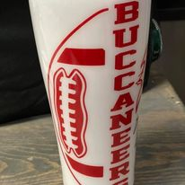
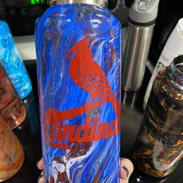

Double Fistin' JWOWW Style
You dream it, I make it!
Choose your tumbler size,
tell me what
you want on it
and I will make it.
I have made over 100 cups
within a year's time.
I would love to create
what your wildest dream.


